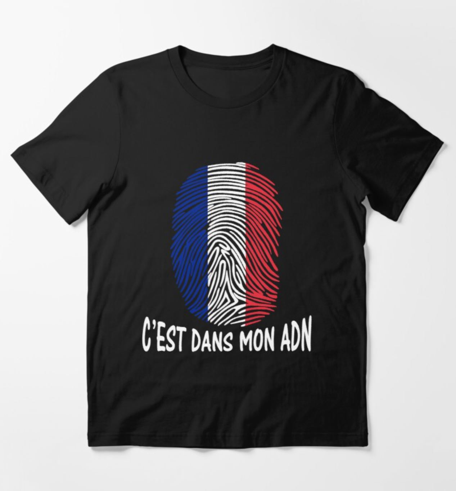

▲ 신나는 프랑스 노래 듣기 / Flornia - Va Va Vis
/
프랑스어 맛보기프랑스어를 왜 배워야 할까?
프랑스어는 전세계의 43개 이상의 모든 대륙에서 사용되고 있으며, 게다가 G7국가 중 두나라의 모국어입니다. (프랑스, 캐나다)
또한, UN의 공식 언어이며, 영어 어휘 중 2만 단어 이상의 어원이 프랑스어입니다. 굉장히 놀랍죠?
보통 어렵게 생각하는 경우가 많지만 세계인들이 많이 공부하고 있는 언어라구요!!
게다가 국제 비즈니스, 에이전시, 관광호텔업 등 관심이 있다면, 프랑스어 공부는 무조건입니다.
우리에게 어려운 프랑스어! FREENCH를 통해 공짜로 재미있게 공부하자!
드라마와 영화를 통해 쉽게 접근할 수 있고, 잘생기고 예쁜 배우들도 볼 수 있다구요!
FREENCH의 런칭 Event!!
| Event 1! SNS 공유
SNS에 해시태그 #무료프랑스어 #프랑스어공부 #프랑스어웹사이트등 3개 이상 달아 공부 인증샷을 올리면 트렌디한 프랑스 티셔츠를 무료로 보내드립니다. 해시태그를 많이 달면 달수록 당첨확률 up!up!  |
Event 2! 회원가입
회원가입을 하여 게시글을 1개 이상 올릴 시 포인트를 2배로 드립니다! *포인트는 프랑스어 꿀팁을 확인할 때 사용가능합니다! 게시글을 쓸 때마다 드리니, 절호의 찬스 놓치지 마세요!! 포인트제에 대한 자세한 내용은 FREENCH 홈페이지에 확인하세요. |
Event 3! 우수회원
매일매일 출석하며 성실하게 공부하는 회원은 프랑스 언어 자격증 응시료를 지원해드립니다! 제일 열심히 활동하는 회원 5분만 뽑아 지원하니 많은 관심부탁드립니다. 자격증 등급에 상관없이 다 퍼주는 이벤트!! 놓치지 마세요!! 

|